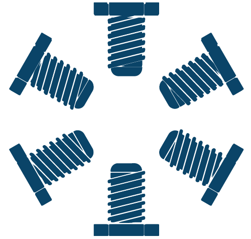

加入會員

換言之，只要依照章程及會費收取辦法定期繳納會費，即使不再是臺大勞工，還是能以贊助會員身份受到工會保障的 ٩(˃̶͈̀௰˂̶͈́)و
快點手刀加入我們吧！(=´∀｀)人(´∀｀=)
入會程序
- 請填寫相關資料，檢附工作證明，並選擇您偏好的會費繳納方式。
- 資料送出後本會將透過電子郵件信箱，通知您是否通過會員審核。
- 審核通過並完成會費繳納程序後，始得成為臺大工會會員。
依本會章程第 10 條第三項，未繳納會費時會員資格及權利比照贊助會員處理。
會費繳納說明
本會會費收取方式有下列三種：
- 由國立臺灣大學從薪資中直接代為扣除、
- 由工會會務人員與您約定時間會面，親自收取、
- 透過金流服務線上付款。
1. （預設）交由臺大代扣
依本會章程第 32 條，此為預設會費繳交方案，收據將寄送至您所填寫的通訊地址；如您不願由臺大代扣，可透過會務人員或線上服務繳交。
2. 與會務人員親自面交
通過會員申請審核後，會務人員將透過電子郵件與您約定時間地點收取款項，並予您會費繳納收據，並定期提醒您按時繳納會費。約定地點以臺大校園校總區為主，亦可依您的需求約定於城中校區。
由於目前秘書人力不足，如有所延遲耽誤，尚請會員見諒！如有需要，可以透過粉絲專頁私訊提醒我們，將盡快為您服務。
3. （建議）以信用卡定期定額繳交
為避免透過校方代扣致使會員遭到刁難、定期面交收取款項造成會務人員與會員不便，本會建議您透過線上付款方式繳納會費。
本方案透過貝殼集器服務串接金流，將定期扣除應繳會費金額，寄送會費繳納收據至您所填答的通訊地址，不設贊助期限；如您在贊助期間不再是臺大勞工，則將自動轉為贊助會員。如欲停止付款（即退會）請透過電子郵件聯繫本會進行退會流程。